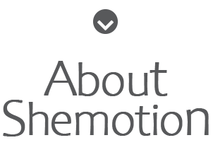

Coaching. Movement. Self-Love.

Shemotion is a guided movement experience designed for women who want to reconnect with their bodies, release stored tension, and step back into their natural feminine energy.
This is not about performance or getting the steps right. It is about feeling, expressing, and coming back to yourself.
The experience begins with guided, rhythmic movement inspired by belly dancing - one of the most powerful expressions of feminine movement. This stage activates the body, builds heat, and brings awareness to the natural flow of your hips and core.
Beyond the physical, this is where you reconnect with your feminine power. Through movement, you begin to soften, release, and return to the parts of yourself that may have been pushed aside by stress, routine, or self-judgement.
Shemotion is designed to feel safe, supportive, and freeing. You do not need to be a dancer. You do not need to know the steps. You are simply invited to move, feel, and reconnect with yourself in a way that feels natural.

Shemotion was born from a deeply personal journey of reconnecting with the body, embracing femininity, and rediscovering the power within. From a young age, I was drawn to movement. I trained in ballroom dancing, later exploring the sensuality of belly dancing and the strength and confidence of pole dancing. Dance was always more than just movement for me, it was expression, release, and a way to feel truly alive. But it wasn’t until I discovered embodiment work that everything shifted.
Through my training at the School of Embodiment Arts and my work as a feminine embodiment coach, I learned how to truly be in my body, to listen, to feel, and to trust my inner wisdom. I realised that when we connect to our bodies with intention, movement becomes medicine. Music and movement became my way back to myself. They helped me release stress, process emotions, and reconnect with joy, sensuality, and self-worth. And that’s when Shemotion was created. A fusion of my two worlds - dance and embodiment.
I created Shemotion for women who feel stuck, disconnected, or overwhelmed by the demands of everyday life. For women who have lost touch with their bodies. For women who want to feel confident, sensual, and fully expressed in their bodies. This is more than a class - it’s an experience. A journey back to yourself.
Because when a woman reconnects with her body, she doesn’t just move differently - she lives differently.
Come and experience Shemotion at Hot Yoga Oxenford
We will update this section with dates soon.